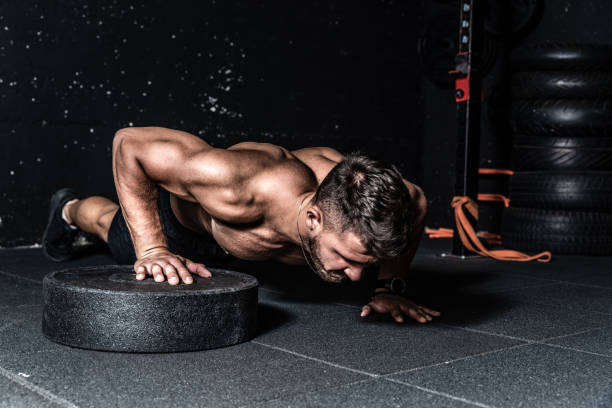

- 


استدلال پشت این تغییر این است که هر چه بافت های بیشتری در طی تمرین تخریب شود، انرژی بیشتری برای ترمیم آنها لازم دارید—خیلی بیشتر از زمانی که تمرینات را معتدل و ملایم انجام داده باشید. این به این معناست که با این روش کاردیو، قادر خواهید بود متابولیسم بدنتان را برای ساعت ها پس از تمرین نیز همچنان بالا نگاه دارید. که در این حالت چربی بیشتری نسبت به زمانی که پس از 20 دقیقه تمرین به مرحله ی چربی سوزی برسید، خواهید سوزاند.
میزان وزنه و تکرارها در تمرینات وزنه ای تئوری قدیمی: بهترین راه برای فرم دادن هیکلتان، استفاده از وزنه های سبک در تعداد تکرارهای زیاد است. تئوری جدید: با استفاده از وزنه های سنگین در تکرارهای کمتر، بهترین نتیجه را خواهید گرفت. فرم دادن به هیکل با این روش امکان پذیر نمی باشد. برای اینکار باید چربی بسوزانید که این هم با رژیم غذایی و تمرینات کاردیو نتیجه می دهد. بلند کردن وزنه های سنگین، علاوه بر بالا نگاه داشتن متابولیسم بدن، باعث آزاد کردن میزان بالاتری از تِستوسترون می شود و تحریک ماهیچه ها را نیز افزایش می دهد. با این کار احتمال از دست دادن حجم عضله ها، که در افرادی که رژیم های غذایی هیپوکالریک دارند متداول است، را نیز کاهش می یابد.
| dexter jackson | phil heath | lou ferringno |
|---|---|---|
| مستر المپیک | 7عنوان مستر المپیک | 2قهرمان مستر |
| ronnie colman | arnold | jay cutler |
| مستر المپیا | مستر المپیا7 | مستر المپیا |
به امید دیدار.